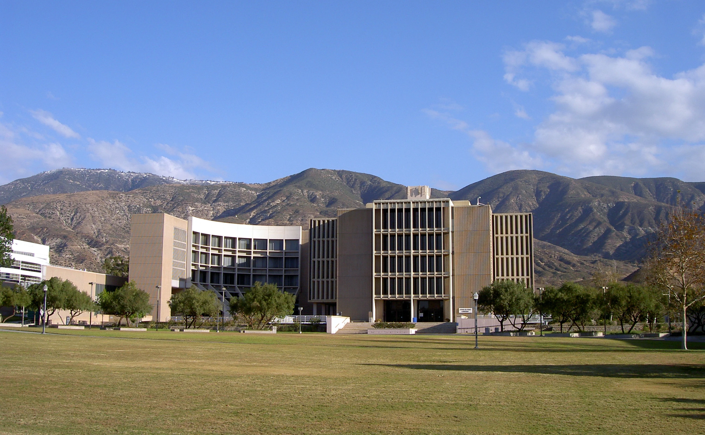
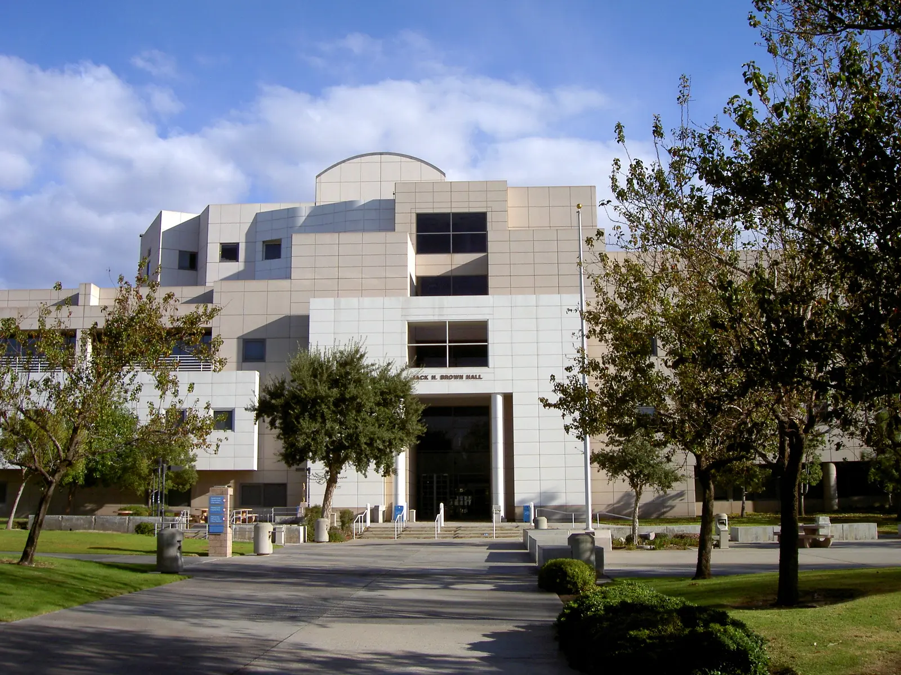
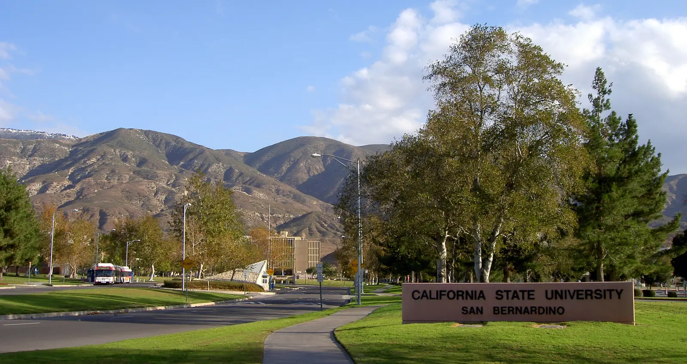

Academic Experience
Cybersecurity, systems and software coursework completed at California State University, San Bernardino.
B.S. Information Systems & Technology · Cyber Security concentration
Degree awarded December 2024



Reference photographs by Amerique, via Wikimedia Commons, CC BY-SA 3.0. See image credits and originals.
Academic experience, connected to my work
I completed these courses at California State University, San Bernardino. My official transcript confirms the degree, coursework and term honors. The connections below explain how these subjects inform my portfolio; specific lab outcomes have their own case evidence.
Cybersecurity and investigations
- IST 4210 · Fall 2024Advanced Networking & Security
- Network and security foundations for interpreting host and traffic observations.
- IST 4620 · Fall 2024Penetration Testing & Ethical Hacking
- An academic foundation for scoped testing and understanding the defender’s view of lab activity.
- IST 5250 · Fall 2024Incident Handling & Cyber Investigation
- Academic preparation for investigation structure, incident context and clear findings.
- IST 5930 · Spring 2023Seminar in IST: Web System Security
- Web-security coursework that complements the public local-hardening exercise.
Systems and engineering
- IST 4910 · Fall 2024Enterprise Systems Administration
- Systems context for examining account, host and administrative activity.
- IST 3420 · Spring 2024Systems Analysis & Design
- A foundation for defining requirements and understandable system boundaries.
- IST 5150 · Spring 2024Project Management
- Academic preparation for planning and documenting technical work.
Software and data
- IST 2410 · Spring 2022Database Management for Business
- Data organization and querying foundations.
- IST 2510 · Spring 2022Big Data Analytics
- Analytical coursework relevant to working with larger event datasets.
- IST 4310 · Spring 2023Web Technology
- Web-development foundations that support clear, accessible technical presentation.
- IST 4320 · Fall 2024Advanced Application Development
- Software-development coursework relevant to analyst and research tools.
- IST 5930 · Fall 2024Seminar in IST: Coding
- Additional coding coursework alongside the systems and security curriculum.
Explore the related work
Coursework and source
Selected completed coursework was reviewed against the supplied official transcript. Course names are expanded from its abbreviations for readability. Kali/VM/network and E3 experience are separately owner-confirmed; the transcript records course subjects rather than tool-specific assignments. The private transcript is not published.